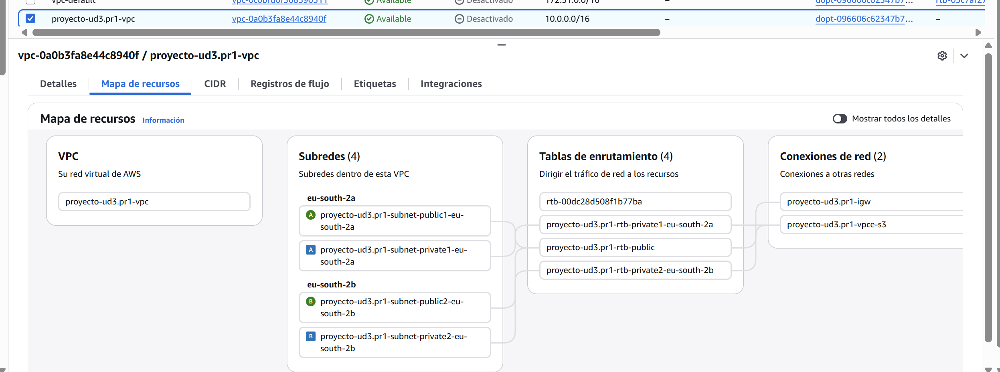

PR1: Guía Canary CLI_HTML- P1
🚀 UD3.PR1 (Parte 1): De la Consola a la CLI: Tu Despliegue Canary (HTTP)
1. Introducción
En la práctica UD2.PR6, construimos manualmente una arquitectura "Canary" usando la consola de AWS. Este método fue excelente para aprender visualmente, pero es lento, propenso a errores humanos y no es escalable.
El siguiente nivel profesional es la Infraestructura como Código (IaC).
En esta práctica, vamos a abandonar la consola gráfica. Recrearemos toda la infraestructura de la UD2.PR6 (SGs, EC2, TGs, ALB, Route 53) usando exclusivamente la AWS CLI (Command Line Interface). Dejaremos la aplicación funcionando de forma insegura por HTTP (puerto 80).
Parte 2
En la siguiente guía (Parte 2), usaremos la CLI para "parchear" esta infraestructura y migrarla a HTTPS.
2. Prerrequisitos
Antes de empezar, asegúrate de tener todo tu entorno local preparado:
- AWS CLI Instalada: Verifica que tienes la CLI de AWS instalada y funcional.
- Documentación Oficial: Instalación de la AWS CLI
- Visual Studio Code (VS Code): Nuestro editor de código.
- Documentación Oficial: Instalación de VS Code
- Git: Para el control de versiones de nuestro código de infraestructura.
- Documentación Oficial: Instalación de Git
- Guía Relacionada: Cómo crear un repositorio en GitHub
- Tu Dominio (Nominalia): Necesitas acceso a tu registrador de dominio para el paso manual de delegación de NS.
- Documentación Oficial: Pág. Oficial: Nominalia
-
VPC Base de Proyecto (Topología de Red): Debes contar dentro de tu entorno de laboratorio con una VPC ya desplegada (puedes reutilizar la de la unidad anterior o crear una nueva con CloudFormation/Terraform) que cumpla estrictamente con la topología mostrada en la imagen inferior:
- 2 Zonas de Disponibilidad (ej.
eu-south-2ayeu-south-2b). - Subredes Públicas y Privadas en cada zona.
- Internet Gateway y Tablas de enrutamiento configuradas correctamente.

- 2 Zonas de Disponibilidad (ej.
Usuario de AWS (Landing Zone / Academy)
- Opción A (Preferida - Landing Zone): Intentarás la práctica primero con las credenciales programáticas (
Access Key IDySecret Access Key) asociadas a tu usuario de la Landing Zone. - Opción B (Contingencia - Academy): Si encuentras errores de permisos (errores "Access Denied" o similares) en la Landing Zone, detente. Recoge y documenta todos los errores. Deberás escalar estos errores al equipo de administración.
- Para poder completar la práctica, cambia a tu entorno de Laboratorio de AWS Academy, donde sí tienes los permisos de administrador necesarios.
3. Paso 1: Configuración del Entorno de Proyecto
- Crear un Repositorio Privado: Ve a GitHub y crea un nuevo repositorio privado llamado
iac-aws-canary-http.[TUSSIGLAS](reemplaza[TUSSIGLAS]con tus siglas). - Clonar y Abrir: Clona el repositorio, entra en la carpeta (
cd iac-aws-canary-http.[TUSSIGLAS]) y ábrela con VS Code (code .). -
Crear Estructura: Crea los siguientes archivos:
4. Paso 2: Configurar Credenciales de AWS
- Abre tu terminal y ejecuta
aws configure. - Introduce el
AWS Access Key IDyAWS Secret Access Key. - Define tu región por defecto (ej.
eu-west-1) y formato de salida (json).
5. Paso 3: Escribir los Scripts de Infraestructura
5.1. Scripts User Data (v1 y v2)
Copia el contenido de los scripts bash en los archivos correspondientes.
5.2. El Script de Creación (deploy.sh)
Este script creará todo para HTTP: SGs (solo puerto 80), la zona DNS, las instancias, los Este script creará todo para HTTP: SGs (solo puerto 80), la zona DNS, las instancias, los TGs, el ALB y el Listener HTTP.
Puedes ver la explicación detallada del script o descargarlo directamente:
Ver Explicación
Descargar UD3.PR1-deployConError
5.3. El Script de Despliegue (canary.sh)
Este script modificará el Listener 80 (HTTP) para cambiar los pesos.
Puedes ver la explicación detallada del script o descargarlo directamente:
Ver Explicación
Descargar UD3.PR1-canary.sh
5.4. El Script de Destrucción (destroy.sh)
Este script elimina solo los recursos HTTP creados.
Puedes ver la explicación detallada del script o descargarlo directamente:
Ver Explicación
Descargar UD3.PR1-destroy.sh
🚀 6. Ejecución (Parte 1)
Sigue estos pasos para desplegar y probar tu aplicación.
💻 1. Preparación de Scripts
Primero, asegúrate de que tus scripts sean ejecutables. En tu terminal local, ejecuta:
⚙️ 2. Fases de Despliegue
Sigue esta secuencia para realizar un despliegue canary controlado.
Fase 1: Despliegue Inicial (Estable)
- Ejecuta el script de despliegue:
./deploy.sh - Acción Manual: Sigue la instrucción que aparecerá en la terminal para delegar los Name Servers (NS) en tu panel de control de Nominalia.
- Prueba: Espera a que los cambios de DNS se propaguen por completo.
- Verifica: Visita tu dominio
http://app.aws.tudominio.com. - Resultado Esperado: Deberías ver la página Verde (Estable).
Fase 3: Despliegue Completo (0/100)
- Ejecuta nuevamente el script de canary:
./canary.sh - Elige la opción 2 (0/100).
- Prueba: Recarga la página en tu navegador.
- Resultado Esperado: Ahora, solo deberías ver la página Azul (Canary) en todas las recargas.
Entregable Parcial
- Sube todo tu código (los 5 archivos) al repositorio privado de GitHub.
- Prepara un PDF que incluya:
- El enlace a tu repositorio privado.
- Capturas de pantalla de tu terminal mostrando la salida de
deploy.shycanary.sh(fases 2 y 3). - Capturas de pantalla de tu navegador mostrando (con
http://):- La página Verde (Fase 1).
- La página Azul (Fase 2).
- La página Azul (Fase 3).
- (Opcional) Si usaste la Landing Zone y falló, añade las capturas de los errores de permisos.